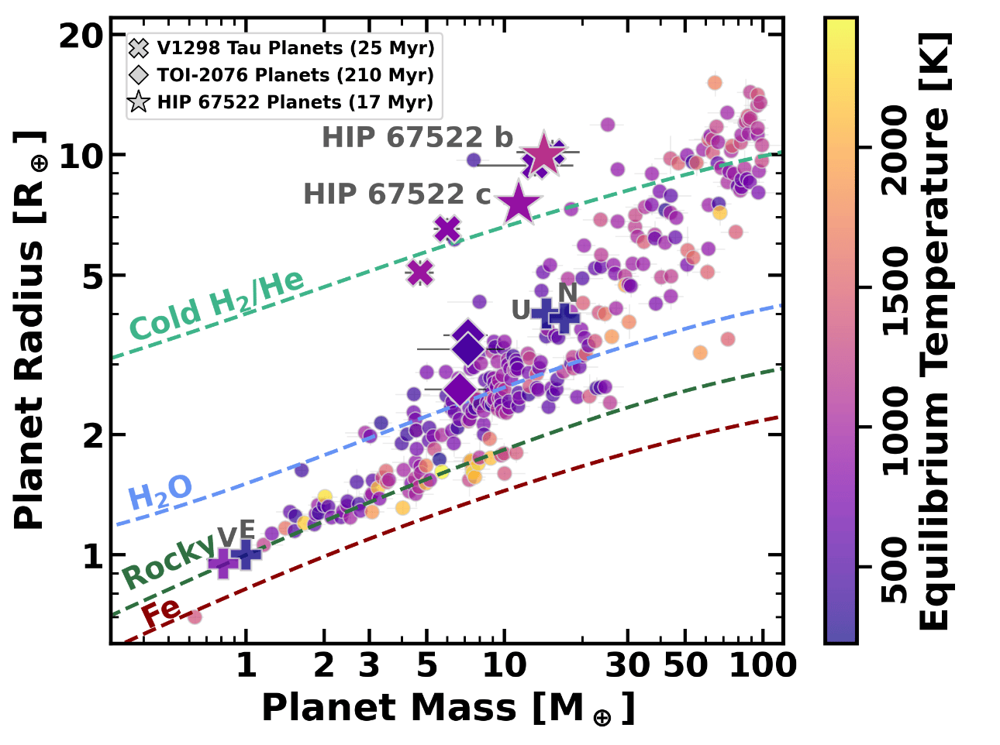

Measuring the mass of a young planet is hard. The usual method, watching the star wobble as the planet tugs on it (radial velocities), struggles because young stars are spotted and active, and their surfaces produce velocity signals far larger than a planet's. Without masses we cannot tell whether a young planet is large because it has a puffy atmosphere or because it is simply massive.
Transit timing variations (TTVs) offer another route. When two planets orbit near a resonance (for example, one completing three orbits for every two of the other), they tug on each other in a regular pattern, and each planet's transits arrive a little early or a little late. The size and shape of those shifts depend on the planets' masses and eccentricities, and transit times are much less affected by starspots than the star's velocity is. There is also evidence that young systems sit closer to resonance than older ones, which makes them good targets.
Toddlers in Resonance is our program to measure masses and eccentricities this way for young multi-planet systems. It is funded through TESS Guest Investigator Cycles 6 and 7 ("Measuring the Mass of Young Planetary Systems Using Transit Timing Variations"), and much of the ground-based follow-up comes from the Las Cumbres Observatory Key Project on young transiting planets, where I am Science PI (with Adam Kraus).
The first paper in the series, led by undergraduate Hannah James, measures the masses and eccentricities of the two 17 Myr giant planets HIP 67522 b and c from their TTVs, and finds low masses for both (James et al., arXiv:2609.35979, in review). HIP 67522 b is also the planet whose mass we estimated from its JWST transmission spectrum (The Featherweight Giant), so it is a rare case where two independent methods can be compared on the same young planet.

Our first young TTV system was TOI-1224, where the transits shift from a linear schedule by less than 15 minutes (more on TOI-1224). Isabel Lopez Murillo, who started on TTVs as an undergraduate, led a search for TTVs in young transiting systems (Lopez Murillo et al. 2025).